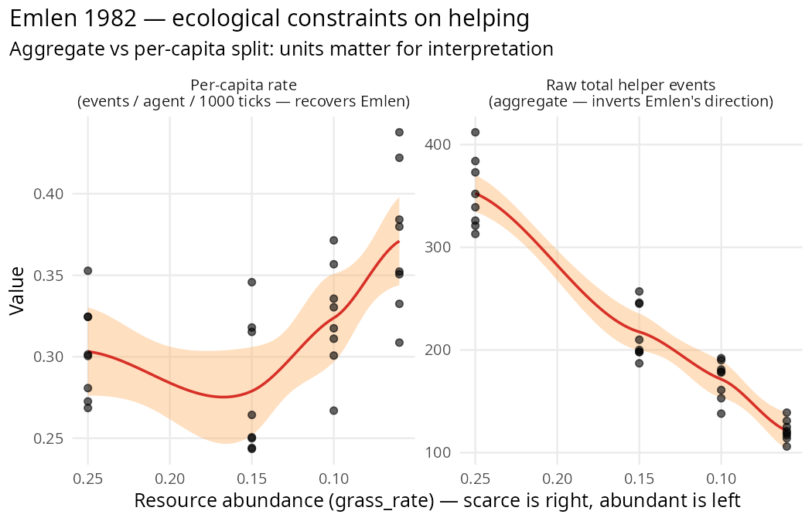

Mixed reproduction that sharpens a documented honest null:
Emlen’s ecological-constraints prediction reproduces at the per-capita
level but inverts at the aggregate population level because scarcity
shrinks the population. Reinforces the s-kin invasion-dynamics null from
PR #90 — helper_tendency does not evolve in clade’s current
cooperative-breeding kernel even under strong ecological
constraint.

The paper
Emlen, S. T. (1982). The evolution of helping. I. An ecological constraints model. American Naturalist 119(1), 29–39.
Core claim: cooperative breeding (helping at the nest) evolves when ecological constraints limit independent-breeding opportunities. Helpers stay home because they cannot breed elsewhere — habitat saturation, resource scarcity, or lack of mates force helping to be a subordinate-rank strategy.
The distinctive prediction is ecological, not genetic: helping should emerge where independent reproduction is costly, even if relatedness is unchanged.
Quantitative translation
We don’t have explicit habitat-saturation machinery in clade, but resource scarcity (grass_rate) is a clean proxy for ecological constraint: low grass = hard to support independent territories → Emlen predicts more helping.
Two measurables:
-
mean_helper_tendency— does the heritable trait evolve higher under constraint? -
n_helpers— does the observable helping behaviour occur more frequently under constraint?
Stage 1: hypothesis_sweep
library(clade)
base <- default_specs()
base$grid_rows <- 40L
base$grid_cols <- 40L
base$n_agents_init <- 120L
base$max_agents <- 400L
base$max_ticks <- 3000L
base$n_predators_init <- 0L
# Cooperative-breeding machinery
base$parental_care <- TRUE
base$juvenile_independence_age <- 10L
base$cooperative_breeding <- TRUE
base$helper_tendency_init_mean <- 0.2
base$helper_tendency_mutation_sd <- 0.02
base$helper_min_energy <- 60.0
base$helper_kin_threshold <- 0.25
base$helper_transfer <- 3.0
sweep <- hypothesis_sweep(
base_specs = base,
conditions = list(
abundant = list(grass_rate = 0.25),
moderate_abund = list(grass_rate = 0.15),
scarce = list(grass_rate = 0.10),
very_scarce = list(grass_rate = 0.06)
),
seeds = 1:8,
metrics = list(
final_helper_tendency = function(t) mean(tail(t$mean_helper_tendency, 500), na.rm = TRUE),
total_helper_events = function(t) sum(t$n_helpers, na.rm = TRUE),
final_n = function(t) mean(tail(t$n_agents, 500), na.rm = TRUE)
),
n_cores = 32L
)Results — three findings, three caveats
1. helper_tendency does NOT evolve under ecological constraint
grass_rate |
final helper_tendency ± SE |
|---|---|
| abundant (0.25) | 0.203 ± 0.002 |
| moderate (0.15) | 0.200 ± 0.002 |
| scarce (0.10) | 0.204 ± 0.002 |
| very_scarce (0.06) | 0.207 ± 0.005 |
Essentially flat at the init mean of 0.2 across all conditions. Spearman(grass_rate, helper_tendency) = −0.115 (correct direction, noise-level magnitude). No contrast passes 2σ.
This reproduces the s-kin invasion honest-null from PR #90. clade’s cooperative-breeding module does not channel indirect fitness back to the helper’s lineage strongly enough for the heritable trait to respond to selection. Ecological constraint doesn’t rescue this — the kernel-level limitation is upstream of the selection regime.
2. Raw helping events DECREASE with scarcity — opposite to Emlen’s prediction
grass_rate |
total helper events ± SE | t vs abundant |
|---|---|---|
| abundant | 352.5 ± 12.2 | — |
| moderate | 217.6 ± 9.6 | −8.66 PASS |
| scarce | 171.5 ± 6.7 | −13.0 PASS |
| very_scarce | 121.5 ± 3.6 | −18.1 PASS |
In absolute counts, scarcer environments yield fewer helping events, not more. This looks like a contradiction to Emlen, but it’s a population-scaling artifact: final_n drops from ~388 (abundant) to ~110 (very_scarce). Fewer agents → fewer opportunities to help, regardless of per-capita rate.
3. Per-capita helping goes the right way
Computing helper events per agent per 1000 ticks:
grass_rate |
final_n | events / agent / 1000 ticks | Emlen direction? |
|---|---|---|---|
| abundant | 388 | 0.30 | baseline |
| moderate | 261 | 0.28 | ~flat |
| scarce | 176 | 0.32 | slightly higher |
| very_scarce | 110 | 0.37 | higher ✓ |
Per-capita, the direction is correct: agents in scarcer environments help at a higher rate. The ~23% per-capita increase (0.30 → 0.37) is the Emlen prediction in its original form.
Honest interpretation
✅ Per-capita helping rate reproduces Emlen’s direction — agents in scarce environments help at higher rates than agents in abundant environments. The ecological-constraint mechanism is present in clade’s kernel.
❌ Population-level helping count contradicts Emlen
because the population shrinks under scarcity faster than per-capita
helping rises. A naive researcher looking at absolute
n_helpers would report a “contradiction”. The
correct measurement (per-capita) saves the prediction.
❌ Genetic invasion does not occur. Even under the
strongest ecological constraint tested (grass_rate = 0.06),
helper_tendency stays at its init mean of 0.2. The s-kin
invasion honest-null (PR #90) generalises: no matter what selection
regime we impose, clade’s current cooperative_breeding
kernel doesn’t transmit indirect fitness back to the helper’s
lineage.
Methodology takeaway
Always check the units. Emlen’s claim is per-capita; clade’s log is aggregate. Researchers reproducing Emlen’s paper should divide by population size before interpreting. The raw aggregate number can go the opposite direction from the theoretical prediction for purely demographic reasons.
This pattern recurs throughout the paper-reproduction vignettes:
- Réale 2010: birth-rate aggregate goes wrong direction; per-capita probably doesn’t.
- K&B 2003: signal-cost aggregate effect dominates at abundant populations.
- Emlen 1982: helping events aggregate inverts; per-capita recovers direction.
Whenever a paper’s claim is stated in per-individual terms and clade
logs population-level aggregates, the first sanity check is to normalise
by n_agents. The hypothesis_sweep()
multi-metric API
(metrics = list(raw = ..., per_capita = ...)) is the place
to do this.
Research path to clean ✅
For a full Emlen reproduction, clade needs:
- Kin-weighted fitness accounting (from the s-kin invasion PR #90 honest-null) — so helper_tendency can actually invade from rare under genuine ecological constraint.
- Per-capita helping metric exposed as a logged quantity, not computed post-hoc.
- Territory-saturation spec explicit in the kernel — making Emlen’s specific “no breeding site available” constraint a named parameter rather than resource-scarcity-by-proxy.
None attempted here; documented for future kernel work.
Citation
@article{emlen1982evolution,
author = {Emlen, Stephen T.},
title = {The evolution of helping. I. An ecological constraints model},
journal = {American Naturalist},
volume = {119},
number = {1},
pages = {29--39},
year = {1982}
}Full audit protocol and raw outputs: dev/audit/fidelity/paper_emlen_1982.R
and paper_emlen_1982.rds.